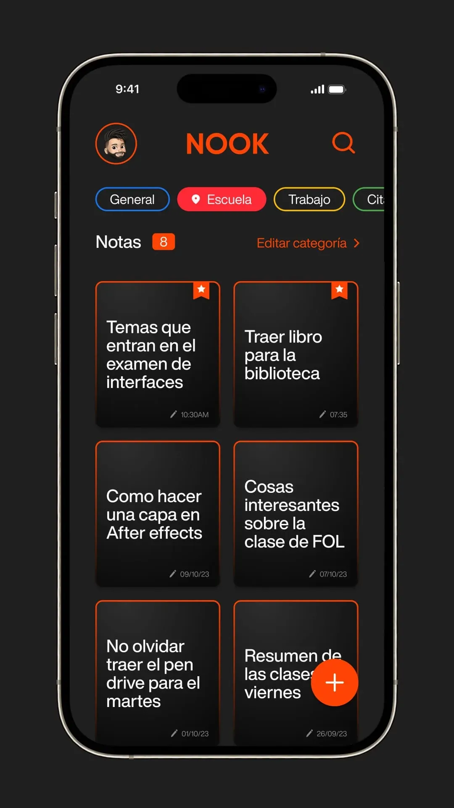
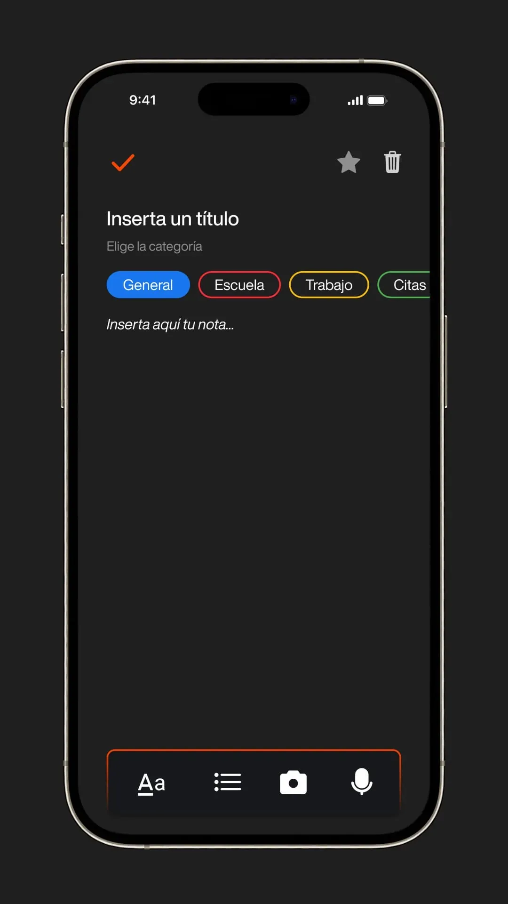
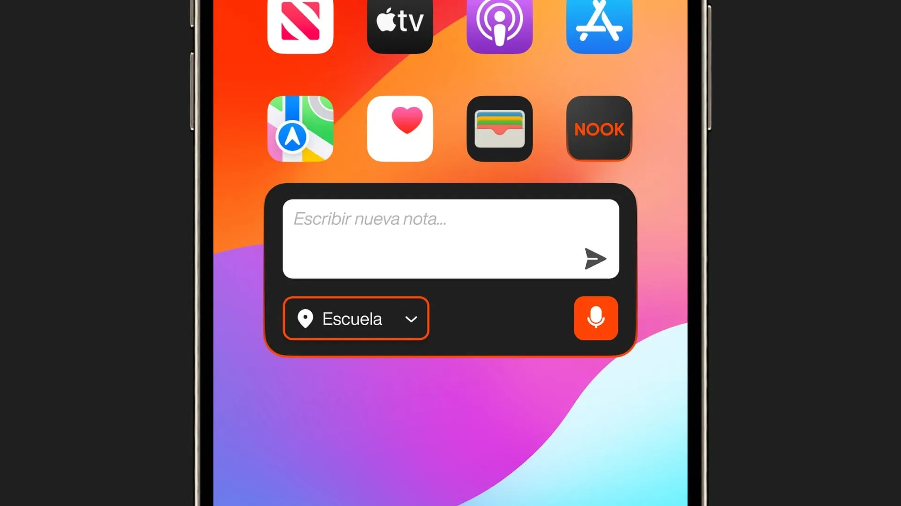
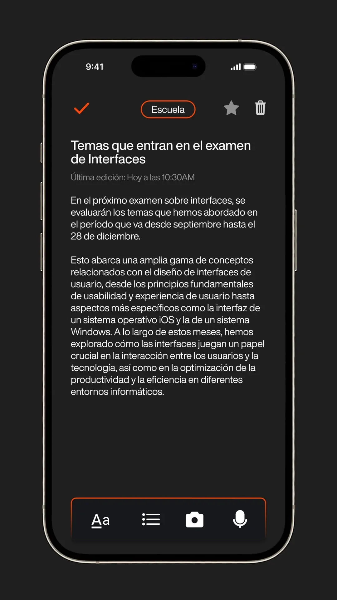
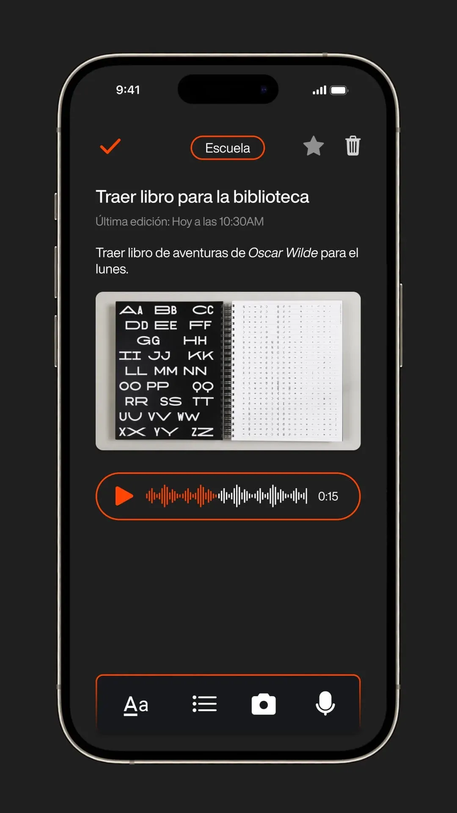

Nook
Nook es una app de notas diseñada para eliminar fricción en el momento más importante:
cuando
una idea aparece. El punto diferencial del proyecto no es estético, es funcional. Incorpora
un
sistema de ubicación inteligente que contextualiza automáticamente cada nota según el lugar
donde se crea, reduciendo pasos, acelerando la captura y organizando la información sin
esfuerzo
manual.
La mayoría de apps de notas obligan al usuario a clasificar, etiquetar o estructurar después
de
escribir. Nook invierte esa lógica. Aprovecha el contexto físico como capa organizativa
automática, permitiendo que el usuario simplemente escriba mientras la aplicación se encarga
de
dar sentido estructural a la información. Esto no solo agiliza la toma de notas, sino que
mejora
la recuperación posterior al asociar recuerdos con espacios reales.
El diseño de la interfaz responde a esa filosofía de inmediatez. Minimalista, directa y
libre de
distracciones, está construida para que la acción principal —capturar una idea— ocurra en
segundos. La arquitectura prioriza rapidez, claridad y acceso contextual, reforzando la
sensación de que la herramienta trabaja a favor del usuario, no al revés.
Nook demuestra mi capacidad para identificar un punto de fricción real y convertirlo en
propuesta de valor tangible. No se trata de añadir funciones, sino de diseñar inteligencia
útil.
Transformar algo cotidiano como tomar notas en una experiencia más ágil, contextual y
eficiente
es lo que convierte a este proyecto en una solución con intención estratégica y potencial
real.




